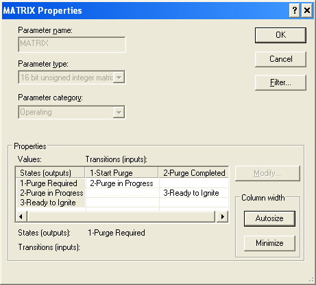

Logic Solver State Transition Diagram function block application information
To implement a state transition diagram in an LSSTD block, first create a table of the possible system states and allowed transitions between states. For example, the state transition diagram at the beginning of this topic could be mapped to the following table.
|
States (Outputs) |
Transitions (Inputs) |
|
|---|---|---|
|
Start Purge |
Purge Completed |
|
|
Purge Required |
Purge in Progress |
— |
|
Purge in Progress |
— |
Ready to Ignite |
|
Ready to Ignite |
— |
— |
The next step is to use the Extensible Parameters dialog (right click the block and select Extensible Parameters) to configure the number of states and transitions.
Label the transitions (inputs) by configuring the DESC_INn parameters. In the example the DESC_INn parameters have the values Start Purge and Purge Completed.
Configure the states (outputs) by creating a named set that includes these states. Any named set you create must be compatible with the default named set. That is, the named set must contain the same number of states (even if you do not use all of them) with the same numbering. In this case, 0 through 16. If the named set is not compatible you cannot browse to it when you configure the STATE parameter. In addition, the first named state (Disabled) must not be user selectable.
The easiest way to do this is by copying, renaming, and editing $std_seq_states (in DeltaV Explorer under System Configuration\Setup\SIS Named Sets). Do not modify the Disabled named state. Modify the other named states as required for your use. In the example, the named states 1 through 3 were renamed to match the states in the table above.
The following figure shows the named set My_std_cfg created for the example.

Next, associate the named set with the LSSTD block from the properties dialog of the STATE parameter.
Finally, you can configure the MATRIX parameter to map the transitions and states as shown in the following figure.

Note that the configured matrix looks like the table created from the original state transition diagram.